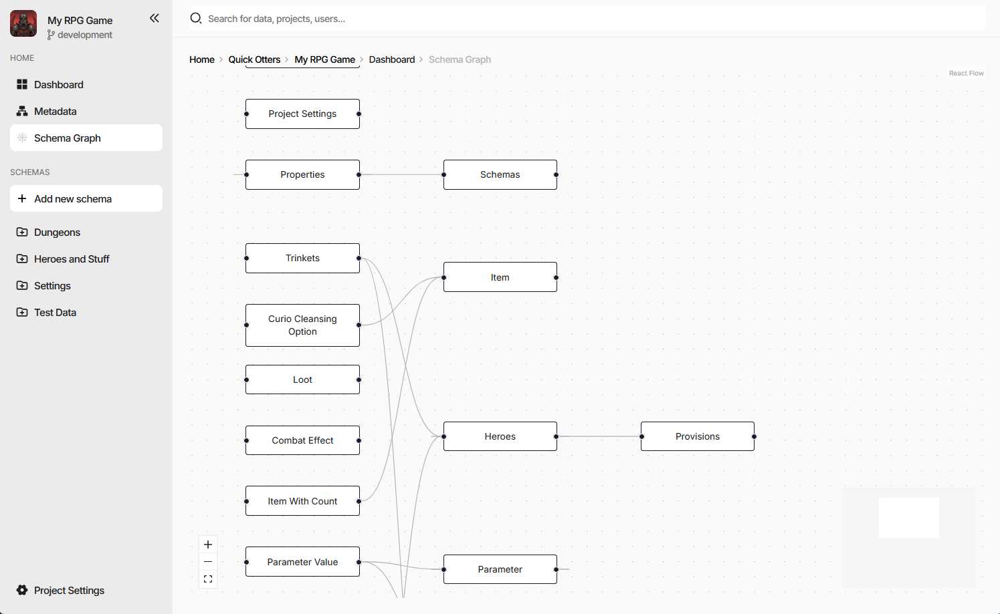

Custom Pages
A custom page is a page of the editor supplied by an extension. It has its own route, its own breadcrumb, and its own place in the browser history, and it is not tied to a document or a schema - which makes it the place for anything that looks at the project as a whole: a dashboard, a report, a graph of the data model, an importer with a UI of its own.

The screenshot is the charon-schema-graph example - a diagram of every schema in the project and the
references between them, reached from a Schema Graph entry the same package added to the side navigation.
Declaring a Page
"config": {
"customPages": [
{
"id": "ext-schema-graph",
"selector": "ext-schema-graph-page",
"title": "Schema Graph",
"breadcrumb": "Schema Graph"
}
],
"customActions": [
{
"name": "Schema Graph",
"location": "side-navigation-menu",
"pageId": "ext-schema-graph",
"icon": "emoji/spider_web"
}
]
}
Field |
Meaning |
|---|---|
|
Identifies the page and becomes a URL segment. Must be unique across every extension installed in the project. Required. |
|
The custom element Charon mounts at that route. Required. |
|
Browser tab title, and the breadcrumb text when |
|
Breadcrumb text, when it should differ from the title. |
A page on its own is reachable only by URL. To give it a way in, pair it with a
custom action that names it through pageId - most often in the
side-navigation-menu, as above, but the document and collection Actions menus work the same way. The
pageId must name a page in the same package.
Pages live under /ext/<package-name>/<page-id>, and everything after the page id is left for the page
itself, so deep links into a page’s own tabs, steps, or detail views are just longer paths.
The Page Element
Charon creates the element by its selector, sets context on it, and appends it to the working area. As
with a schema editor, the property is assigned before connectedCallback,
so render from whichever happens second:
export default class SchemaGraphPageElement extends HTMLElement {
private _context?: ExtensionPageContext;
private _root?: Root;
get context() { return this._context!; }
set context(value: ExtensionPageContext) {
if (Object.is(value, this._context)) {
return;
}
this._context = value;
this.render();
}
public connectedCallback() { this.render(); }
public disconnectedCallback() { this.unmount(); }
}
customElements.define('ext-schema-graph-page', SchemaGraphPageElement);
Clean up in disconnectedCallback. A page is unmounted whenever the user navigates away, which happens far
more often than for a field editor.
The Page Context
ExtensionPageContext carries the same services as an action context, plus what
the URL said:
Field |
Meaning |
|---|---|
|
Query string parameters of the current URL. |
|
Path segments after the page id, empty when there are none. |
|
Game data, dialogs and wizards, notifications, navigation, persisted UI state - see Host Services. |
restOfRoute is what makes a page’s internal state bookmarkable: read it on mount to restore a tab or a
selection, and write it back through services.navigation.customPage as the user moves around.
context.services.navigation?.customPage(
'charon-schema-graph', // package
'ext-schema-graph', // page id
['Item'], // becomes /ext/charon-schema-graph/ext-schema-graph/Item
{ zoom: '1.5' } // becomes ?zoom=1.5
);
The same call navigates to a page declared by any installed extension, not only the caller’s own - which is
how one extension can hand off to another. The rest of the navigation service reaches Charon’s own screens:
dashboard(), settings(section?), documentCollection(schemaName), documentForm(schemaName, id),
and back().
Persisting Page State
Pages are unmounted on navigation, so anything the user arranged - a zoom level, a collapsed group, a chosen
layout - is gone unless it is stored. services.ui.state persists state scoped to the extension package, at a
layer you choose: the browser tab, the browser, the project, or the workspace, each of those either personal or
shared with the team. See Host Services.